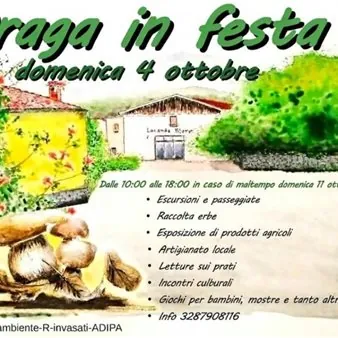

dom 4 ott
Draga in Festa
Dalle 10 alle 18 del prossimo 4 ottobre Draga ospiterà l'annuale festa che ad inizio ottobre puntualmente “invade” la località carsica. Organizzata da Bioest, Legambiente e altre associazioni, l'edizione di quest'anno prevede una lunga lista di appuntamenti, passeggiate…
 Indicazioni
Indicazioni
- Costi e prenotazioni
- Costo non indicato · Prenotazione non indicata
- Programma
- Programma da verificare. Apri la fonte ufficiale per orari e possibili aggiornamenti.
- In caso di maltempo
- Nessuna indicazione specifica pubblicata.
- Note
- Acquisito automaticamente dalla fonte.
L’EVENTO
Descrizione completa
Dalle 10 alle 18 del prossimo 4 ottobre Draga ospiterà l'annuale festa che ad inizio ottobre puntualmente “invade” la località carsica. Organizzata da Bioest, Legambiente e altre associazioni, l'edizione di quest'anno prevede una lunga lista di appuntamenti, passeggiate, laboratori e esposizioni. Si parte alle 10 con la passeggiata per famiglie nei dintorni di Draga, per finire poi alle 16:30 con l'inaugurazione di “Casa Veris” con Santa messa a cura dell'Associazione L'Helianthus Aps. In caso di maltempo Draga in festa sarà recuperata la domenica successiva. Di seguito tutti gli eventi in programma: Gli appuntamenti
10.00: passeggiata per famiglie: escursione sui sentieri di Draga, percorso di orientwalking con CRAL Trieste Trasporti, laboratorio di muretti a secco con Sebastian
11.30 e 16.00: laboratorio erbe per grandi e bambini con “orti che curano" e Drum Circle con Marco Rossignol
11.30 – 17:00: pollaio aperto – Conosciamo le galline con Franco
12.00: escursione guidata e raccolta delle erbe con Furio, maestro di oleoliti e esibizione di Officine Artistiche
12.30: laboratorio di coroncine con Lorella
13.00: passeggiata nel tempo: il Tabor di Draga e la strada della ferrovia (cenni storici) con Doriana e Susanna, laboratorio di riparazione e manutenzione biciclette con FIAB
14.00: presentazione ed escursione guidata alle “iazere” con Legambiente e laboratorio coroncine con Lorella
14:30: SOS Bici meccanica d’emergenza
15.00: visita guidata e laboratori in azienda agricola “Il Giardino di Laila”
15:30: pillole di ciclabilità a cura della FIAB
16:30: inaugurazione “Casa Veris” con Santa messa a cura dell'Associazione L'Helianthus Aps L'animazione per bambini è prevista alle 11.00, alle 12.00, alle 14.00 e alle 16.00. Lettura sui prati con Mariagrazia. Spazio poi a incontri culturali con enti, gruppi e associazioni che si occupano dei prodotti e del territorio, laboratorio di uncinetto e ricamo. A tutto ciò si aggiunge l'esposizione d’arte contemporanea a cura degli artisti locali, ma anche una mostra di quadri carsici, la degustazione d'olio, la disponibilità di marmellate, miele e altri prodotti locali. La mostra fotografica è a cura di Fotografare Donna Aps Rocke/éDonna. Per ulteriori informazioni contattare il 3287908116.
IL PROGRAMMA
Programma e orari
Appuntamenti raccolti dalle fonti elencate. Dove manca un orario, non è ancora disponibile in questa scheda.
Programma pubblicato
- 10.00: passeggiata per famiglie: escursione sui sentieri di Draga, percorso di orientwalking con CRAL Trieste Trasporti, laboratorio di muretti a secco con Sebastian
- 11.30 e 16.00: laboratorio erbe per grandi e bambini con “orti che curano" e Drum Circle con Marco Rossignol
- 11.30 – 17:00: pollaio aperto – Conosciamo le galline con Franco
- 12.00: escursione guidata e raccolta delle erbe con Furio, maestro di oleoliti e esibizione di Officine Artistiche
- 12.30: laboratorio di coroncine con Lorella
- 13.00: passeggiata nel tempo: il Tabor di Draga e la strada della ferrovia (cenni storici) con Doriana e Susanna, laboratorio di riparazione e manutenzione biciclette con FIAB
- 14.00: presentazione ed escursione guidata alle “iazere” con Legambiente e laboratorio coroncine con Lorella
- 14:30: SOS Bici meccanica d’emergenza
- 15.00: visita guidata e laboratori in azienda agricola “Il Giardino di Laila”
- 15:30: pillole di ciclabilità a cura della FIAB
- 16:30: inaugurazione “Casa Veris” con Santa messa a cura dell'Associazione L'Helianthus Aps
INFORMAZIONI UTILI
Prima di partire
- Controllare la fonte prima di partire.
ORGANIZZAZIONE